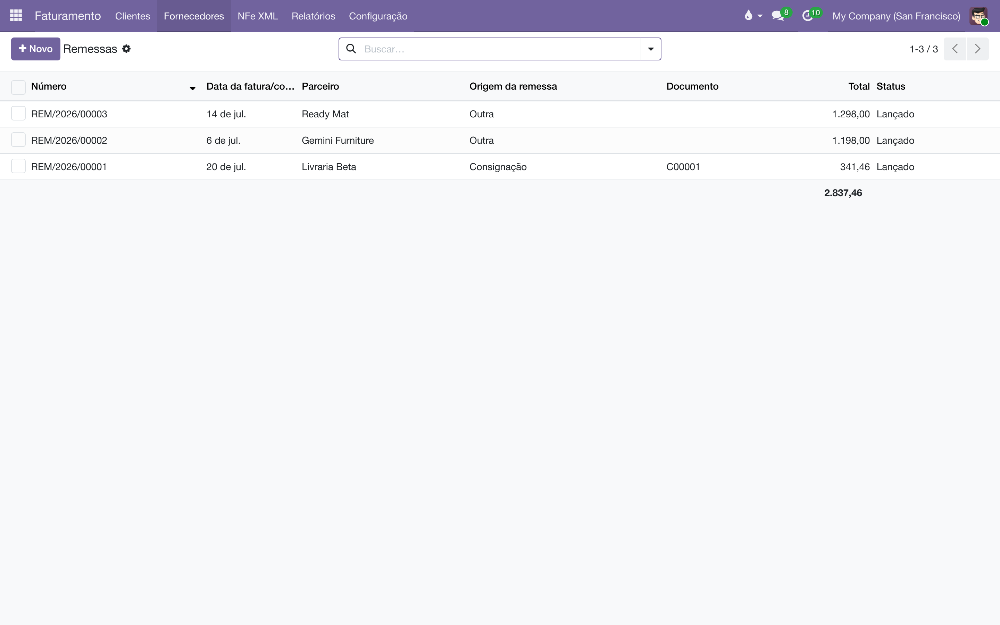
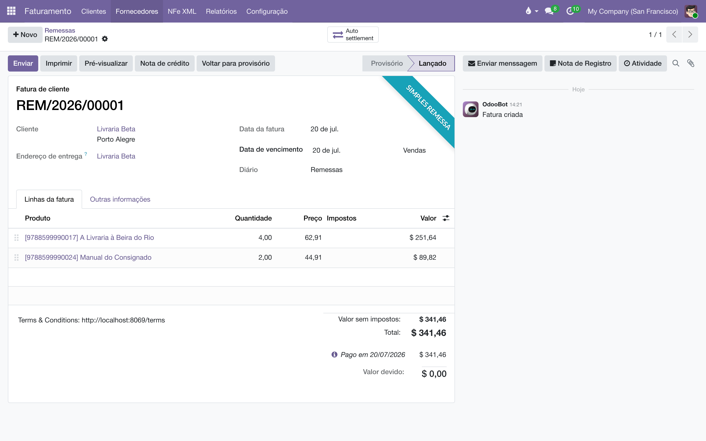

Notas fiscais que nunca geram cobrança — consignação, bonificação, material de feira — emitidas e baixadas automaticamente, sem jamais aparecerem como dívida de ninguém.
No Brasil, todo livro que sai do armazém precisa de nota fiscal — mesmo quando não há venda nenhuma. O lote consignado que vai para a livraria, os exemplares bonificados para divulgação, as caixas que viajam para uma feira: cada movimento desses exige uma nota, e nenhum deles é uma cobrança.
É para isso que existe a nota de remessa, o documento REM/. Ela é uma fatura de verdade — mesmo formulário, mesmos itens, mesmo valor — com duas diferenças:
Com isso, o menu Faturas fica só com as vendas de verdade (as que esperam pagamento e conciliação bancária), e as remessas ganham a sua própria lista, onde bonificação, consignação e eventos convivem separáveis pela origem.
Normalmente você não cria uma remessa à mão. Elas nascem dos documentos que coordenam cada operação — a campanha de bonificação, o pedido de consignação — e chegam aqui prontas. Este módulo é a casa fiscal delas: o diário, a numeração, a baixa automática e a lista para consulta.

O que faz uma nota se quitar sozinha é a sua posição fiscal. Para cada tipo de remessa que a editora pratica (remessa em consignação, bonificação, feira…):
Os nomes dos campos são os mesmos usados na configuração do sistema de produção antigo, de propósito: as posições fiscais já existentes lá (devoluções, feiras, remessas, bonificação) migram uma a uma, sem tradução.
Não há nada a criar: o diário de remessas (nome Remessas, código REM) é criado automaticamente na primeira vez que algum documento precisa dele, uma vez por empresa. É a marca "diário de remessa" nele — e não o código — que faz as notas dele sumirem de Faturas e aparecerem em Remessas.
A numeração fiscal não fura. A baixa automática é lançada em um diário de operações diversas, nunca no REM — uma sequência fiscal com buracos (REM/00001, 00003…) pareceria ter notas faltando, e aqui cada número é de uma nota de verdade.
Quando uma nota do diário REM é confirmada:

Uma campanha de divulgação envia 2 exemplares de R$ 25 para uma livraria. A nota REM/00007 é emitida por R$ 50, confirmada e imediatamente baixada contra a conta-espelho da bonificação. A livraria nunca aparece em nenhuma lista de cobrança, e o custo da campanha fica visível na conta-espelho.
Cada módulo que gera remessas registra ali a sua origem — a bonificação marca as dela, a consignação as dela — então uma lista só serve a todas as operações sem misturá-las.
| Regra | O que ela garante |
|---|---|
| Diário de remessa exige posição fiscal com baixa automática | Confirmar uma nota no diário REM sem a posição fiscal configurada é recusado com uma mensagem clara. Sem essa trava, uma nota meio-configurada seria lançada em silêncio e, semanas depois, uma livraria seria cobrada por livros que nunca comprou. |
| A baixa não consome números REM/ | O lançamento de quitação é contabilidade interna, não documento fiscal: ele é numerado no diário de diversos e a sequência REM/ permanece contínua. |
| Nota e baixa não se separam | Não é possível excluir uma nota cuja baixa continua lançada — seria deixar meia operação pendurada no razão. Estorne ou reabra a baixa primeiro. |
| Faturas só com vendas | A lista de Faturas de cliente exclui os diários de remessa; a lista de Remessas mostra só eles. Nenhum documento aparece nos dois lugares. |
| Vendas comuns não são tocadas | A baixa automática só age em notas do diário de remessa. Uma fatura normal continua em aberto até ser paga, como sempre. |
Por que o extrato contábil mostra a remessa como quitada? Porque o valor a receber foi de fato baixado — essa é a mecânica que impede a cobrança. A faixa "Simples remessa" na tela existe justamente para que ninguém leia essa quitação como um pagamento: não houve dinheiro, houve uma contrapartida na conta-espelho, auditável pelo botão Baixa automática.
Posso criar uma remessa manualmente? Pode, para os casos que nenhum módulo cobre (um envio avulso de material, por exemplo): crie a nota pela lista de Remessas, no diário Remessas, com uma posição fiscal que tenha a baixa automática configurada. Ao confirmar, ela se comporta como qualquer outra. Mas o caminho normal é deixar que o documento da operação (campanha, pedido de consignação) a gere.
Confirmei e recebi um erro sobre a posição fiscal. É a guarda em ação: a nota está no diário de remessa, mas a posição fiscal escolhida não tem Baixa automática (Auto Invoice Paid) marcada (ou está sem a conta de contrapartida). Configure a posição fiscal — ou, se a nota é uma venda de verdade, mova-a para um diário de vendas comum.
E se a remessa foi emitida por engano? Estorne ou redefina a baixa (pelo botão Baixa automática) e depois cancele a nota. A ordem importa: a trava de exclusão impede que a nota desapareça deixando a baixa órfã.
Veja também
Todo documento do sistema carrega um prefixo na numeração — CO/2026/00001 é um acerto, AT/2026/00042 é um chamado. A lista é a mesma em todos os manuais:
| Prefixo | O que é |
|---|---|
C | Pedido de consignação: o pedido que põe livros na prateleira do cliente — C00001, no lugar do S da venda comum. |
CO/ | Consignação, o documento do acerto: registra o que o cliente vendeu e vira venda — CO/2026/00001. |
CR/ | Retorno de consignação: o documento que pede a devolução dos exemplares da prateleira — CR/2026/00001. |
CA | Auditoria de consignação: reconstrói o saldo da prateleira do cliente pelas notas fiscais e registra o ajuste — CA00001. |
CP/ | Campanha de consignação: o sortimento-alvo por canal — quantos exemplares de cada título as prateleiras devem ter — CP/2026/0001. |
AC/ | Acordo de Consignação: o contrato com a livraria, dono da prateleira — AC/2026/00001. |
COM/OUT/ | A série da remessa de consignação ao cliente, do armazém à livraria — COM/OUT/2026/00001, no espelho do WH/OUT. |
MP/OUT/ | A série das entregas de marketplace (Olist): o pacote de pessoa física, na caixa de despacho própria do depósito — MP/OUT/2026/00001. |
COM/MOV/ | A série dos fluxos internos de prateleira da consignação — COM/MOV/2026/00001. |
COM/IN/ | A série do retorno de consignação, da prateleira ao armazém — COM/IN/2026/00001, no espelho do WH/IN. |
REM/ | Remessa: a nota de simples remessa, sem cobrança — a numeração vem do diário fiscal REM. |
COL/ | Coleta: o lote do pedido de coleta às transportadoras — COL/2026/00001. |
AT/ | Atendimento: o chamado nascido do e-mail comercial — AT/2026/00001. |
MBX/ | O lote de envio de metadados à Metabooks — MBX/2026/00001. |
Impostos de Direitos Autorais/ | O lote da fatura acumuladora do IRRF retido dos autores no mês. |
Royalties entre Empresas/ | O lote da fatura acumuladora de royalties entre as empresas da casa. |
| Do próprio Odoo | |
S | Pedido de venda comum — S00001; o pedido de consignação usa o C no lugar. |
WH/OUT | Entrega comum do armazém: a transferência de saída padrão do Odoo. |
WH/IN | Recebimento do armazém: a transferência de entrada padrão do Odoo. |
Bases antigas guardam transferências nas séries COM/ e RET/, de antes da separação por direção — o histórico não é renumerado.
Manual completo, com busca e as demais páginas: Notas de remessa.